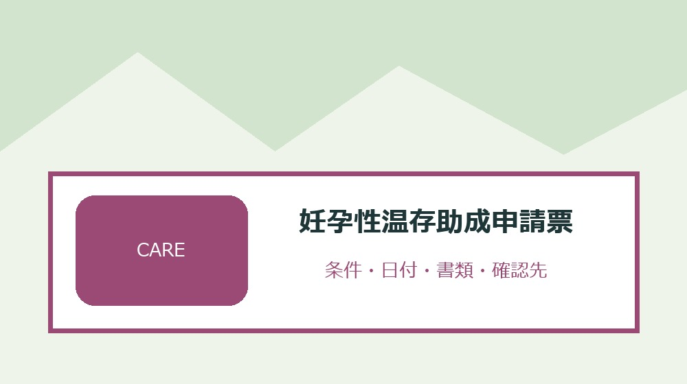
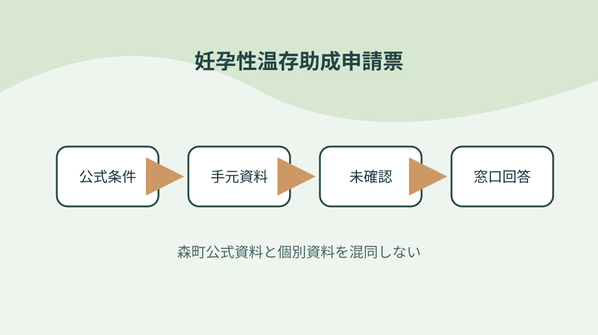
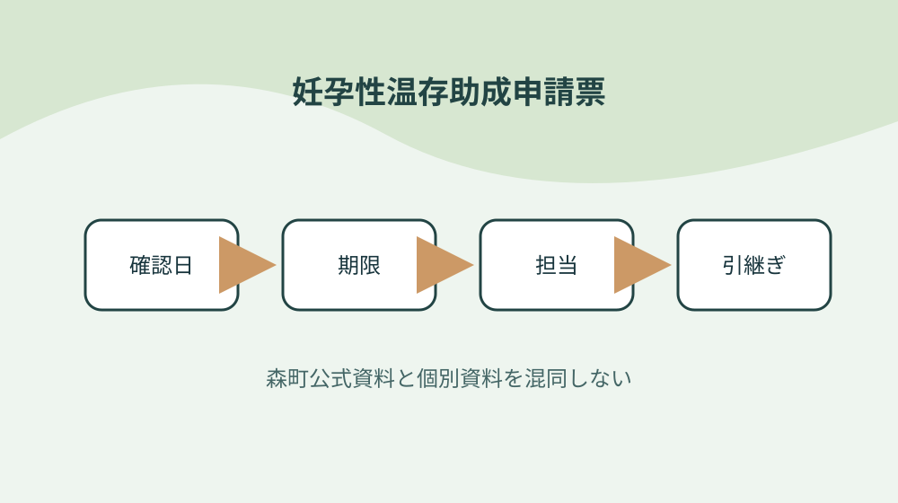

森町の妊孕性温存治療費助成を治療区分・県制度・申請期限で整理する

結論：治療区分を最初に分けることから始め、二つの医療機関証明を取り違えない条件と「森町は若年がん患者等の妊孕性温存治療費を助成する」の根拠を妊孕性温存助成申請票へ結びます。期限と次の確認先まで一行にすれば、森町の妊孕性温存治療費助成を治療区分・県制度・申請期限で整理する作業の取り違えを減らせます。
治療区分を最初に分ける
森町公式資料で確認できる事実は「森町は若年がん患者等の妊孕性温存治療費を助成する」です。治療区分を最初に分けるでは、この条件を妊孕性温存助成申請票の一行へ写し、対象者・対象物・確認日を同じ欄に置きます。制度名だけをメモせず、どの資料のどの条件を確認したかが家族や担当者にもたどれる形にしてください。
治療区分を最初に分けるを確かめるときは、「温存治療と温存後生殖補助医療を分けている」という公式条件と、手元の通知・領収書・型番・日付を別列にします。必要資料が揃わなければ空欄を推測で埋めず、妊孕性温存助成申請票へ未確認の理由と次の照会先を記します。この表の役割は結論を急ぐことではなく、森町の妊孕性温存治療費助成を治療区分・県制度・申請期限で整理するで起きる食い違いを安全に発見することです。
妊孕性温存助成申請票の作業日は、①「治療内容ごとに助成上限額が異なる」の掲載資料と更新日を見る、②治療区分を最初に分けるの手元資料を照合する、③不足一点だけを窓口へ尋ねる、④回答日と担当を追記する順に進めます。共通条件だけで個別可否を断定せず、森町の妊孕性温存治療費助成を治療区分・県制度・申請期限で整理するに関する最新の運用を実行前に確かめます。
妊孕性温存助成申請票を引き継ぐ欄には、「県の支援事業を併用する場合としない場合で書類が異なる」の確認結果、次に行うこと、期限、原本の保管場所を書きます。治療区分を最初に分けるを更新したら旧版を消さず、変更理由と回答した窓口を一行添えます。担当者が替わっても、その事実をどの資料で確かめたかまで戻れるため、同じ問い合わせや書類の取り直しを減らせます。
治療開始日と終了日を記録する
森町公式資料で確認できる事実は「治療内容ごとに助成上限額が異なる」です。治療開始日と終了日を記録するでは、この条件を妊孕性温存助成申請票の一行へ写し、対象者・対象物・確認日を同じ欄に置きます。制度名だけをメモせず、どの資料のどの条件を確認したかが家族や担当者にもたどれる形にしてください。
治療開始日と終了日を記録するを確かめるときは、「県の支援事業を併用する場合としない場合で書類が異なる」という公式条件と、手元の通知・領収書・型番・日付を別列にします。必要資料が揃わなければ空欄を推測で埋めず、妊孕性温存助成申請票へ未確認の理由と次の照会先を記します。この表の役割は結論を急ぐことではなく、森町の妊孕性温存治療費助成を治療区分・県制度・申請期限で整理するで起きる食い違いを安全に発見することです。
妊孕性温存助成申請票の作業日は、①「温存治療の助成回数は一人通算二回」の掲載資料と更新日を見る、②治療開始日と終了日を記録するの手元資料を照合する、③不足一点だけを窓口へ尋ねる、④回答日と担当を追記する順に進めます。共通条件だけで個別可否を断定せず、森町の妊孕性温存治療費助成を治療区分・県制度・申請期限で整理するに関する最新の運用を実行前に確かめます。
妊孕性温存助成申請票を引き継ぐ欄には、「他自治体の助成も通算回数に含む」の確認結果、次に行うこと、期限、原本の保管場所を書きます。治療開始日と終了日を記録するを更新したら旧版を消さず、変更理由と回答した窓口を一行添えます。担当者が替わっても、その事実をどの資料で確かめたかまで戻れるため、同じ問い合わせや書類の取り直しを減らせます。
県制度の併用有無を確認する
森町公式資料で確認できる事実は「温存治療の助成回数は一人通算二回」です。県制度の併用有無を確認するでは、この条件を妊孕性温存助成申請票の一行へ写し、対象者・対象物・確認日を同じ欄に置きます。制度名だけをメモせず、どの資料のどの条件を確認したかが家族や担当者にもたどれる形にしてください。
県制度の併用有無を確認するを確かめるときは、「他自治体の助成も通算回数に含む」という公式条件と、手元の通知・領収書・型番・日付を別列にします。必要資料が揃わなければ空欄を推測で埋めず、妊孕性温存助成申請票へ未確認の理由と次の照会先を記します。この表の役割は結論を急ぐことではなく、森町の妊孕性温存治療費助成を治療区分・県制度・申請期限で整理するで起きる食い違いを安全に発見することです。
妊孕性温存助成申請票の作業日は、①「温存後治療は初回時の妻の年齢で回数上限が分かれる」の掲載資料と更新日を見る、②県制度の併用有無を確認するの手元資料を照合する、③不足一点だけを窓口へ尋ねる、④回答日と担当を追記する順に進めます。共通条件だけで個別可否を断定せず、森町の妊孕性温存治療費助成を治療区分・県制度・申請期限で整理するに関する最新の運用を実行前に確かめます。
妊孕性温存助成申請票を引き継ぐ欄には、「出産後は一定の助成回数をリセットする扱いがある」の確認結果、次に行うこと、期限、原本の保管場所を書きます。県制度の併用有無を確認するを更新したら旧版を消さず、変更理由と回答した窓口を一行添えます。担当者が替わっても、その事実をどの資料で確かめたかまで戻れるため、同じ問い合わせや書類の取り直しを減らせます。
助成上限を治療名で照合する
森町公式資料で確認できる事実は「温存後治療は初回時の妻の年齢で回数上限が分かれる」です。助成上限を治療名で照合するでは、この条件を妊孕性温存助成申請票の一行へ写し、対象者・対象物・確認日を同じ欄に置きます。制度名だけをメモせず、どの資料のどの条件を確認したかが家族や担当者にもたどれる形にしてください。
助成上限を治療名で照合するを確かめるときは、「出産後は一定の助成回数をリセットする扱いがある」という公式条件と、手元の通知・領収書・型番・日付を別列にします。必要資料が揃わなければ空欄を推測で埋めず、妊孕性温存助成申請票へ未確認の理由と次の照会先を記します。この表の役割は結論を急ぐことではなく、森町の妊孕性温存治療費助成を治療区分・県制度・申請期限で整理するで起きる食い違いを安全に発見することです。
妊孕性温存助成申請票の作業日は、①「妊娠十二週以降の死産にも回数リセットの扱いがある」の掲載資料と更新日を見る、②助成上限を治療名で照合するの手元資料を照合する、③不足一点だけを窓口へ尋ねる、④回答日と担当を追記する順に進めます。共通条件だけで個別可否を断定せず、森町の妊孕性温存治療費助成を治療区分・県制度・申請期限で整理するに関する最新の運用を実行前に確かめます。
妊孕性温存助成申請票を引き継ぐ欄には、「申請期限は治療終了日の属する年度末」の確認結果、次に行うこと、期限、原本の保管場所を書きます。助成上限を治療名で照合するを更新したら旧版を消さず、変更理由と回答した窓口を一行添えます。担当者が替わっても、その事実をどの資料で確かめたかまで戻れるため、同じ問い合わせや書類の取り直しを減らせます。

通算回数を自治体横断で数える
森町公式資料で確認できる事実は「妊娠十二週以降の死産にも回数リセットの扱いがある」です。通算回数を自治体横断で数えるでは、この条件を妊孕性温存助成申請票の一行へ写し、対象者・対象物・確認日を同じ欄に置きます。制度名だけをメモせず、どの資料のどの条件を確認したかが家族や担当者にもたどれる形にしてください。
通算回数を自治体横断で数えるを確かめるときは、「申請期限は治療終了日の属する年度末」という公式条件と、手元の通知・領収書・型番・日付を別列にします。必要資料が揃わなければ空欄を推測で埋めず、妊孕性温存助成申請票へ未確認の理由と次の照会先を記します。この表の役割は結論を急ぐことではなく、森町の妊孕性温存治療費助成を治療区分・県制度・申請期限で整理するで起きる食い違いを安全に発見することです。
妊孕性温存助成申請票の作業日は、①「医療機関の証明書作成料は申請者負担」の掲載資料と更新日を見る、②通算回数を自治体横断で数えるの手元資料を照合する、③不足一点だけを窓口へ尋ねる、④回答日と担当を追記する順に進めます。共通条件だけで個別可否を断定せず、森町の妊孕性温存治療費助成を治療区分・県制度・申請期限で整理するに関する最新の運用を実行前に確かめます。
妊孕性温存助成申請票を引き継ぐ欄には、「振込口座が分かる資料を用意する」の確認結果、次に行うこと、期限、原本の保管場所を書きます。通算回数を自治体横断で数えるを更新したら旧版を消さず、変更理由と回答した窓口を一行添えます。担当者が替わっても、その事実をどの資料で確かめたかまで戻れるため、同じ問い合わせや書類の取り直しを減らせます。
年度末期限をカレンダーへ入れる
森町公式資料で確認できる事実は「医療機関の証明書作成料は申請者負担」です。年度末期限をカレンダーへ入れるでは、この条件を妊孕性温存助成申請票の一行へ写し、対象者・対象物・確認日を同じ欄に置きます。制度名だけをメモせず、どの資料のどの条件を確認したかが家族や担当者にもたどれる形にしてください。
年度末期限をカレンダーへ入れるを確かめるときは、「振込口座が分かる資料を用意する」という公式条件と、手元の通知・領収書・型番・日付を別列にします。必要資料が揃わなければ空欄を推測で埋めず、妊孕性温存助成申請票へ未確認の理由と次の照会先を記します。この表の役割は結論を急ぐことではなく、森町の妊孕性温存治療費助成を治療区分・県制度・申請期限で整理するで起きる食い違いを安全に発見することです。
妊孕性温存助成申請票の作業日は、①「温存後治療では戸籍謄本等を求める場合がある」の掲載資料と更新日を見る、②年度末期限をカレンダーへ入れるの手元資料を照合する、③不足一点だけを窓口へ尋ねる、④回答日と担当を追記する順に進めます。共通条件だけで個別可否を断定せず、森町の妊孕性温存治療費助成を治療区分・県制度・申請期限で整理するに関する最新の運用を実行前に確かめます。
妊孕性温存助成申請票を引き継ぐ欄には、「様式ごとに両面印刷の指定を確認する」の確認結果、次に行うこと、期限、原本の保管場所を書きます。年度末期限をカレンダーへ入れるを更新したら旧版を消さず、変更理由と回答した窓口を一行添えます。担当者が替わっても、その事実をどの資料で確かめたかまで戻れるため、同じ問い合わせや書類の取り直しを減らせます。
二つの医療機関証明を取り違えない
森町公式資料で確認できる事実は「温存後治療では戸籍謄本等を求める場合がある」です。二つの医療機関証明を取り違えないでは、この条件を妊孕性温存助成申請票の一行へ写し、対象者・対象物・確認日を同じ欄に置きます。制度名だけをメモせず、どの資料のどの条件を確認したかが家族や担当者にもたどれる形にしてください。
二つの医療機関証明を取り違えないを確かめるときは、「様式ごとに両面印刷の指定を確認する」という公式条件と、手元の通知・領収書・型番・日付を別列にします。必要資料が揃わなければ空欄を推測で埋めず、妊孕性温存助成申請票へ未確認の理由と次の照会先を記します。この表の役割は結論を急ぐことではなく、森町の妊孕性温存治療費助成を治療区分・県制度・申請期限で整理するで起きる食い違いを安全に発見することです。
妊孕性温存助成申請票の作業日は、①「森町は若年がん患者等の妊孕性温存治療費を助成する」の掲載資料と更新日を見る、②二つの医療機関証明を取り違えないの手元資料を照合する、③不足一点だけを窓口へ尋ねる、④回答日と担当を追記する順に進めます。共通条件だけで個別可否を断定せず、森町の妊孕性温存治療費助成を治療区分・県制度・申請期限で整理するに関する最新の運用を実行前に確かめます。
妊孕性温存助成申請票を引き継ぐ欄には、「温存治療と温存後生殖補助医療を分けている」の確認結果、次に行うこと、期限、原本の保管場所を書きます。二つの医療機関証明を取り違えないを更新したら旧版を消さず、変更理由と回答した窓口を一行添えます。担当者が替わっても、その事実をどの資料で確かめたかまで戻れるため、同じ問い合わせや書類の取り直しを減らせます。
証明書作成料を費用表へ入れる
森町公式資料で確認できる事実は「森町は若年がん患者等の妊孕性温存治療費を助成する」です。証明書作成料を費用表へ入れるでは、この条件を妊孕性温存助成申請票の一行へ写し、対象者・対象物・確認日を同じ欄に置きます。制度名だけをメモせず、どの資料のどの条件を確認したかが家族や担当者にもたどれる形にしてください。
証明書作成料を費用表へ入れるを確かめるときは、「温存治療と温存後生殖補助医療を分けている」という公式条件と、手元の通知・領収書・型番・日付を別列にします。必要資料が揃わなければ空欄を推測で埋めず、妊孕性温存助成申請票へ未確認の理由と次の照会先を記します。この表の役割は結論を急ぐことではなく、森町の妊孕性温存治療費助成を治療区分・県制度・申請期限で整理するで起きる食い違いを安全に発見することです。
妊孕性温存助成申請票の作業日は、①「治療内容ごとに助成上限額が異なる」の掲載資料と更新日を見る、②証明書作成料を費用表へ入れるの手元資料を照合する、③不足一点だけを窓口へ尋ねる、④回答日と担当を追記する順に進めます。共通条件だけで個別可否を断定せず、森町の妊孕性温存治療費助成を治療区分・県制度・申請期限で整理するに関する最新の運用を実行前に確かめます。
妊孕性温存助成申請票を引き継ぐ欄には、「県の支援事業を併用する場合としない場合で書類が異なる」の確認結果、次に行うこと、期限、原本の保管場所を書きます。証明書作成料を費用表へ入れるを更新したら旧版を消さず、変更理由と回答した窓口を一行添えます。担当者が替わっても、その事実をどの資料で確かめたかまで戻れるため、同じ問い合わせや書類の取り直しを減らせます。
口座資料と請求書を組にする
森町公式資料で確認できる事実は「治療内容ごとに助成上限額が異なる」です。口座資料と請求書を組にするでは、この条件を妊孕性温存助成申請票の一行へ写し、対象者・対象物・確認日を同じ欄に置きます。制度名だけをメモせず、どの資料のどの条件を確認したかが家族や担当者にもたどれる形にしてください。
口座資料と請求書を組にするを確かめるときは、「県の支援事業を併用する場合としない場合で書類が異なる」という公式条件と、手元の通知・領収書・型番・日付を別列にします。必要資料が揃わなければ空欄を推測で埋めず、妊孕性温存助成申請票へ未確認の理由と次の照会先を記します。この表の役割は結論を急ぐことではなく、森町の妊孕性温存治療費助成を治療区分・県制度・申請期限で整理するで起きる食い違いを安全に発見することです。
妊孕性温存助成申請票の作業日は、①「温存治療の助成回数は一人通算二回」の掲載資料と更新日を見る、②口座資料と請求書を組にするの手元資料を照合する、③不足一点だけを窓口へ尋ねる、④回答日と担当を追記する順に進めます。共通条件だけで個別可否を断定せず、森町の妊孕性温存治療費助成を治療区分・県制度・申請期限で整理するに関する最新の運用を実行前に確かめます。
妊孕性温存助成申請票を引き継ぐ欄には、「他自治体の助成も通算回数に含む」の確認結果、次に行うこと、期限、原本の保管場所を書きます。口座資料と請求書を組にするを更新したら旧版を消さず、変更理由と回答した窓口を一行添えます。担当者が替わっても、その事実をどの資料で確かめたかまで戻れるため、同じ問い合わせや書類の取り直しを減らせます。

控えを治療回ごとに保存する
森町公式資料で確認できる事実は「温存治療の助成回数は一人通算二回」です。控えを治療回ごとに保存するでは、この条件を妊孕性温存助成申請票の一行へ写し、対象者・対象物・確認日を同じ欄に置きます。制度名だけをメモせず、どの資料のどの条件を確認したかが家族や担当者にもたどれる形にしてください。
控えを治療回ごとに保存するを確かめるときは、「他自治体の助成も通算回数に含む」という公式条件と、手元の通知・領収書・型番・日付を別列にします。必要資料が揃わなければ空欄を推測で埋めず、妊孕性温存助成申請票へ未確認の理由と次の照会先を記します。この表の役割は結論を急ぐことではなく、森町の妊孕性温存治療費助成を治療区分・県制度・申請期限で整理するで起きる食い違いを安全に発見することです。
妊孕性温存助成申請票の作業日は、①「温存後治療は初回時の妻の年齢で回数上限が分かれる」の掲載資料と更新日を見る、②控えを治療回ごとに保存するの手元資料を照合する、③不足一点だけを窓口へ尋ねる、④回答日と担当を追記する順に進めます。共通条件だけで個別可否を断定せず、森町の妊孕性温存治療費助成を治療区分・県制度・申請期限で整理するに関する最新の運用を実行前に確かめます。
妊孕性温存助成申請票を引き継ぐ欄には、「出産後は一定の助成回数をリセットする扱いがある」の確認結果、次に行うこと、期限、原本の保管場所を書きます。控えを治療回ごとに保存するを更新したら旧版を消さず、変更理由と回答した窓口を一行添えます。担当者が替わっても、その事実をどの資料で確かめたかまで戻れるため、同じ問い合わせや書類の取り直しを減らせます。
良い点
森町公式資料で確認できる事実は「温存後治療は初回時の妻の年齢で回数上限が分かれる」です。良い点では、この条件を妊孕性温存助成申請票の一行へ写し、対象者・対象物・確認日を同じ欄に置きます。制度名だけをメモせず、どの資料のどの条件を確認したかが家族や担当者にもたどれる形にしてください。
良い点を確かめるときは、「出産後は一定の助成回数をリセットする扱いがある」という公式条件と、手元の通知・領収書・型番・日付を別列にします。必要資料が揃わなければ空欄を推測で埋めず、妊孕性温存助成申請票へ未確認の理由と次の照会先を記します。この表の役割は結論を急ぐことではなく、森町の妊孕性温存治療費助成を治療区分・県制度・申請期限で整理するで起きる食い違いを安全に発見することです。
妊孕性温存助成申請票の作業日は、①「妊娠十二週以降の死産にも回数リセットの扱いがある」の掲載資料と更新日を見る、②良い点の手元資料を照合する、③不足一点だけを窓口へ尋ねる、④回答日と担当を追記する順に進めます。共通条件だけで個別可否を断定せず、森町の妊孕性温存治療費助成を治療区分・県制度・申請期限で整理するに関する最新の運用を実行前に確かめます。
妊孕性温存助成申請票を引き継ぐ欄には、「申請期限は治療終了日の属する年度末」の確認結果、次に行うこと、期限、原本の保管場所を書きます。良い点を更新したら旧版を消さず、変更理由と回答した窓口を一行添えます。担当者が替わっても、その事実をどの資料で確かめたかまで戻れるため、同じ問い合わせや書類の取り直しを減らせます。
注文したい点
森町公式資料で確認できる事実は「妊娠十二週以降の死産にも回数リセットの扱いがある」です。注文したい点では、この条件を妊孕性温存助成申請票の一行へ写し、対象者・対象物・確認日を同じ欄に置きます。制度名だけをメモせず、どの資料のどの条件を確認したかが家族や担当者にもたどれる形にしてください。
注文したい点を確かめるときは、「申請期限は治療終了日の属する年度末」という公式条件と、手元の通知・領収書・型番・日付を別列にします。必要資料が揃わなければ空欄を推測で埋めず、妊孕性温存助成申請票へ未確認の理由と次の照会先を記します。この表の役割は結論を急ぐことではなく、森町の妊孕性温存治療費助成を治療区分・県制度・申請期限で整理するで起きる食い違いを安全に発見することです。
妊孕性温存助成申請票の作業日は、①「医療機関の証明書作成料は申請者負担」の掲載資料と更新日を見る、②注文したい点の手元資料を照合する、③不足一点だけを窓口へ尋ねる、④回答日と担当を追記する順に進めます。共通条件だけで個別可否を断定せず、森町の妊孕性温存治療費助成を治療区分・県制度・申請期限で整理するに関する最新の運用を実行前に確かめます。
妊孕性温存助成申請票を引き継ぐ欄には、「振込口座が分かる資料を用意する」の確認結果、次に行うこと、期限、原本の保管場所を書きます。注文したい点を更新したら旧版を消さず、変更理由と回答した窓口を一行添えます。担当者が替わっても、その事実をどの資料で確かめたかまで戻れるため、同じ問い合わせや書類の取り直しを減らせます。
対案・結論
妊孕性温存助成申請票は、全項目を一度で完成させるより、「治療区分を最初に分ける」から確定する方が実用的です。公式条件、手元資料、窓口回答を別欄にし、温存治療と温存後生殖補助医療を分けているという事実と個別事情の食い違いを消さずに残してください。
二つの医療機関証明を取り違えないに費用や契約が伴う場合は、対象・期限・事前手続を再確認してから進めます。森町の共通案内だけで個別案件を断定せず、温存後治療は初回時の妻の年齢で回数上限が分かれるという確認済み情報と手元資料を示して尋ねます。
結論は、控えを治療回ごとに保存するまでを今日の一行にし、次の確認日を決めることです。妊孕性温存助成申請票があれば、森町の妊孕性温存治療費助成を治療区分・県制度・申請期限で整理するの作業を家族や社内担当が同じ根拠から続けられます。
様式ごとに両面印刷の指定を確認するという条件が更新された場合は旧版を削除せず、変更日と採用理由を記します。妊孕性温存助成申請票に履歴が残れば、古い書類や判断を使った理由も後から説明できます。
大石の視点
ここまでの「森町は若年がん患者等の妊孕性温存治療費を助成する」などの制度条件は森町公式資料で確認できる事実です。以下は、私、大石浩之が妊孕性温存助成申請票を運用するためにすすめる方法であり、森町や関係機関の公式見解ではありません。
私は妊孕性温存助成申請票を紙一枚から始め、治療開始日と終了日を記録するの原本を動かさず、写しや写真へ番号を付ける方法を勧めます。森町の妊孕性温存治療費助成を治療区分・県制度・申請期限で整理するの確認で原本を持ち歩く回数を減らせるからです。
証明書作成料を費用表へ入れるに未確認欄が残っても失敗扱いしません。確認先と期限が書かれた未確認欄は、出産後は一定の助成回数をリセットする扱いがあるを根拠なく個別案件へ当てはめるより価値があります。
最後に、妊孕性温存助成申請票に含む個人情報や事業情報は共有範囲を決めます。控えを治療回ごとに保存するための内部版と外部提出版を同じファイルにせず、必要部分だけを渡せる構成にしてください。
よくある質問
妊孕性温存助成申請票で最初に確認することは何ですか。
対象者・対象物、基準日、手元資料、森町公式の条件を一行にします。森町は若年がん患者等の妊孕性温存治療費を助成するという共通条件を起点にしつつ、個別の可否は資料と窓口回答で確定します。
資料が足りないまま妊孕性温存助成申請票を作れますか。
作れます。県制度の併用有無を確認するに不足があれば未確認と記し、必要資料、確認先、確認期限を残します。推測で埋めないことが、妊孕性温存助成申請票から安全に作業を再開する条件です。
森町公式ページを保存すれば再確認は不要ですか。
様式ごとに両面印刷の指定を確認するなどの条件は変わることがあります。妊孕性温存助成申請票へURL、ページ名、確認日を残し、二つの医療機関証明を取り違えないを実行する直前に現行案内を再確認してください。
妊孕性温存助成申請票を家族や担当者へ渡すとき何を添えますか。
控えを治療回ごとに保存するため、確認済み事実、未確認事項、期限、次の担当、原本の保管場所、町へ尋ねた日と回答を添えます。妊孕性温存助成申請票に含む個人情報は渡す相手と保管方法を限定します。
公式情報源
- 妊孕性温存治療費助成（2026年8月19日確認）
- 妊孕性温存治療申請書（2026年8月19日確認）
最終確認日：2026-08-19 ／ 公表事実と執筆者の解釈・意見を分けて記載しています。